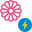
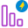

Large · bolt with two bends
Circle 48 px and up · hilos-large.svg

Light · #FFFFFF
Dark · #212529
HIL-2151 · HIL-2261 · A blue circle #0288D1 with a yellow lightning bolt
#FFD500. Every file carries the same bolt with two bends, from 16 CSS
pixels up: the thinner bolts the ladder used to give read as a broken bolt. Every demo sign carries the logo as a mark in its bottom-right corner, apart from
the demo's symbol by a transparent gap: the medium and large signs with the same
two-bend bolt, the small sign with a dot. View at 100% browser zoom.
Circle 48 px and up · hilos-large.svg
Light · #FFFFFF
Dark · #212529
Circle 20 to below 48 px · hilos-medium.svg
Light · #FFFFFF
Dark · #212529
Circle 10 to below 20 px · hilos-small.svg
Light · #FFFFFF
Dark · #212529
hilos-small.svghilos-medium.svghilos-large.svghilos-large.svghilos-small.svghilos-medium.svghilos-large.svghilos-large.svgEach demo at 16, 32, 64 and 180 CSS pixels. Each size is labeled with the sign file it uses:
-small below 24 px, -medium from 24 to below 48, -large from 48.
Light · #FFFFFF
binance-btc-tracker-small.svgbinance-btc-tracker-medium.svgbinance-btc-tracker-large.svgbinance-btc-tracker-large.svgDark · #212529
binance-btc-tracker-small.svgbinance-btc-tracker-medium.svgbinance-btc-tracker-large.svgbinance-btc-tracker-large.svgLight · #FFFFFF
chat-small.svgchat-medium.svgchat-large.svgchat-large.svgDark · #212529
chat-small.svgchat-medium.svgchat-large.svgchat-large.svgLight · #FFFFFF
concert-tickets-small.svgconcert-tickets-medium.svgconcert-tickets-large.svgconcert-tickets-large.svgDark · #212529
concert-tickets-small.svgconcert-tickets-medium.svgconcert-tickets-large.svgconcert-tickets-large.svgLight · #FFFFFF
ecommerce-shop-small.svgecommerce-shop-medium.svg
ecommerce-shop-large.svgecommerce-shop-large.svgDark · #212529
ecommerce-shop-small.svgecommerce-shop-medium.svgecommerce-shop-large.svgecommerce-shop-large.svgLight · #FFFFFF
file-gallery-manager-small.svgfile-gallery-manager-medium.svgfile-gallery-manager-large.svgfile-gallery-manager-large.svgDark · #212529
file-gallery-manager-small.svgfile-gallery-manager-medium.svgfile-gallery-manager-large.svgfile-gallery-manager-large.svgLight · #FFFFFF
online-testing-small.svgonline-testing-medium.svgonline-testing-large.svgonline-testing-large.svgDark · #212529
online-testing-small.svgonline-testing-medium.svgonline-testing-large.svgonline-testing-large.svgLight · #FFFFFF
pmd-small.svgpmd-medium.svgpmd-large.svgpmd-large.svgDark · #212529
pmd-small.svgpmd-medium.svgpmd-large.svgpmd-large.svgLight · #FFFFFF
polls-small.svgpolls-medium.svg
polls-large.svgpolls-large.svgDark · #212529
polls-small.svgpolls-medium.svgpolls-large.svgpolls-large.svgLight · #FFFFFF
preferans-small.svgpreferans-medium.svgpreferans-large.svgpreferans-large.svgDark · #212529
preferans-small.svgpreferans-medium.svgpreferans-large.svgpreferans-large.svgLight · #FFFFFF
roblox-game-server-small.svgroblox-game-server-medium.svgroblox-game-server-large.svgroblox-game-server-large.svgDark · #212529
roblox-game-server-small.svgroblox-game-server-medium.svgroblox-game-server-large.svgroblox-game-server-large.svgLight · #FFFFFF
solar-system-model-small.svgsolar-system-model-medium.svgsolar-system-model-large.svgsolar-system-model-large.svgDark · #212529
solar-system-model-small.svgsolar-system-model-medium.svgsolar-system-model-large.svgsolar-system-model-large.svgLight · #FFFFFF
tasks-small.svgtasks-medium.svgtasks-large.svgtasks-large.svgDark · #212529
tasks-small.svgtasks-medium.svgtasks-large.svgtasks-large.svgThe markup imitates <name>-touch-180.png, which export.cjs
writes: the -large file at 140 px on an opaque #FFFFFF square of 180 × 180 CSS px,
20 px of padding on every side. The PNG itself is an export and is not kept in the repository.
The rounded corners only illustrate the mask that iOS lays over the square tile; the file has
square corners, and the platform rounds them.
hilos-touch-180.pngbinance-btc-tracker-touch-180.pngchat-touch-180.pngconcert-tickets-touch-180.pngecommerce-shop-touch-180.pngfile-gallery-manager-touch-180.pngonline-testing-touch-180.pngpmd-touch-180.pngpolls-touch-180.pngpreferans-touch-180.pngroblox-game-server-touch-180.pngsolar-system-model-touch-180.pngtasks-touch-180.pngAt each size, check that the bolt reads as a bolt and not as a smudge. The variant is chosen by the CSS size of the circle; a high-density screen does not change it. Below 10 px the logo is the circle alone.
One file and one shade serve both backgrounds. The bolt sits only on the circle; the circle is what meets the background.
For each demo sign, check that the symbol reads on both backgrounds from one file, that the gap keeps it apart from the mark, and that the mark at 16 px is a dot and from 32 the bolt with two bends.
For each phone tile, check that the symbol and the mark stay clear of the rounded corners. The real browser tab and home-screen icon are checked on the devices: a headless browser draws neither.
This sheet loads only local SVG files. It needs no server, JavaScript, web fonts or network.